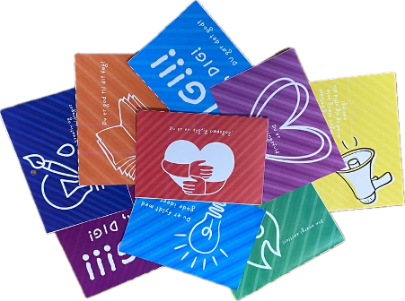

Lad os sammen bidrage til sunde og forebyggende arbejdsmiljøer!
"Mikro-øjeblikke skaber håb. At lige der hvor alting ser ud til at gå af helvedes til, og man kan ikke selv overskue noget som helst, så kommer der et andet menneske. En hjælper. Og er der noget, der skaber håb, så er det at blive hjulpet. Oplever man det bare én gang i sit liv, så kan man holde til meget som menneske."
SIMPLE MÅDER AT STARTE I DAG
GI' FOR POKKER DET KOMPLIMENT
Giv det kompliment, du har tænkt på i dagevis. Det betyder mere, end du tror - og din kollega kan jo ikke læse dine tanker.
EN KOP MED OMSORG
Når du alligevel rejser dig for at hente kaffe eller vand, så snup en kop med til din kollega. At få sat en kop foran sig uden at have bedt om det, føles som ren omsorg.
DEN GUIDEDE HIGH-FIVE
Drop den klassiske "Hvordan går det?", som ofte udløser et automatisk "Fint", og brug mikro-spørgsmålet: "Hvad har været det bedste ved din dag indtil videre?" Det tvinger hjernen over i et positivt gear på 5 sekunder. Det virker - slå det op!
EN RAR GESTUS
Træk stolen ud for en anden, tag en ekstra gaffel med til frokost, eller gå ud med nabostuens skraldespand. Små gestusser skaber store ringe i vandet.
SMÅ VISUELLE KRAM
Snup en lille post-it og skriv: "Du gør det godt" eller "Vi er glade for, at du er her!". Sæt den på kaffemaskinen, ved spejlet på toilettet eller på indersiden af en skabslåge.
SMIL
Smil smitter. Vi ved aldrig hvad der er på spil for folk, og derfor kan et smil fra en kollega eller en ven gøre underværker for vedkommendes dag.
SIG DET MED ET POSTKORT
Små ord skaber en kæmpe forskel. Gør det nemt håndgribeligt at
sprede arbejdsglæde.
1. Sæt rammen: Placer de færdiglavede postkort et
fast og synligt sted.
2. Spred værdien: Udfyld løbende et kort til en
kollega, der har gjort en forskel, og giv det videre.
Det er personligt, det er nemt, og det spreder øjeblikkelig glæde.
Download gratis 10 skabeloner
her.

SKAB ET PUSTERUM TIL DOG OG DINE KOLLEGAER
Et sundt arbejdsmiljø kræver plads til at lade op. Med et pusterum
skaber i en fysisk ramme for en mikrohandling, der gør en kæmpe
forskel i en travl hverdag.
1. Find pladsen: Indret et hjørne, en rolig krog
eller et depotrum
2. Skærm sanserne: Skru helt ned for lys, støj
og indtryk
3. Skab komfort: Placer en god stol i rummet, og
suppler med støjdæmpende høretelefoner og nogle fidget-toys.
Reglerne er enkle: Tag 5 minutters uforsturret nulstilling for
krop og sind.
Vi hedder Emma og Jasmin – og vi står bag
SMÅ TILTAG, KÆMPE VÆRDI. Vi er to pædagogstuderende fra
Campus Aarhus C, som brænder for at skabe mærkbare forandringer gennem
medmenneskelige
mikrohandlinger.
"Problemet med mistrivsel er stort og komplekst – men behøver
løsningen altid at være det?"
Det tror vi ikke på. I en hverdag, hvor systemer og
rammer ofte kan virke uoverskuelige, glemmer vi til tider det vigtigste:
det nære relationelle arbejde.
Vi mener, at vejen til trivsel findes i de små, bevidste
handlinger.
Et ekstra øjebliks opmærksomhed, et anerkendende blik eller et trygt rum
skabt i øjenhøjde kan gøre hele forskellen for det enkelte menneske.
Hvad vil vi? Vi ønsker at inspirere til, hvordan vi i praksis kan række
ud og flytte bjerge med ganske små greb. Vi vil gøre det komplekse
håndgribeligt og bringe det pædagogiske nærvær helt i front.
Fordi selv de mindste tiltag kan skabe en kæmpe værdi.
Kontakt os her:
EmmaJasmin2023@gmail.com